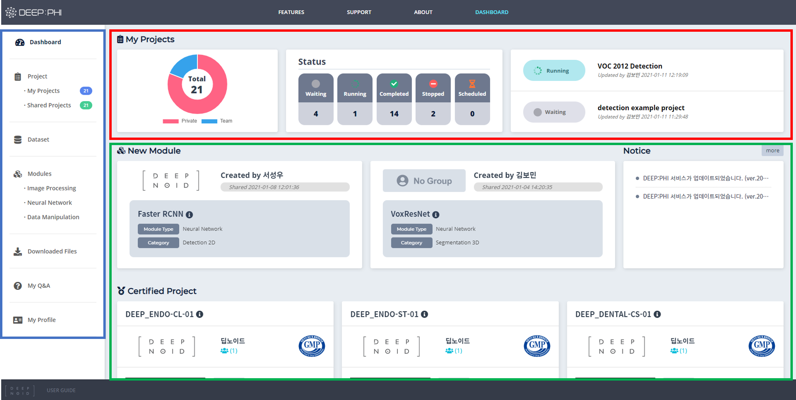

2. 화면 구성
2-2. 프로젝트 대시보드

Dashboard에서 프로젝트를 생성하고 관리할 수 있습니다.
- 파란색 영역은 Dashboard에서 이용할 수 있는 메뉴들로 구성되어 있습니다. 프로젝트, 데이터셋, 모듈, 다운로드한 파일을 확인하고 관리할 수 있습니다. Q&A를 이용하거나 나의 프로필을 설정할 수 있습니다.
- 붉은색 영역은 나의 프로젝트 현황을 간략하게 살펴볼 수 있습니다.
- 녹색 영역에서 새롭게 추가된 모듈과 인증받은 프로젝트, 최근 공유된 프로젝트와 추천 프로젝트 등을 확인할 수 있습니다.